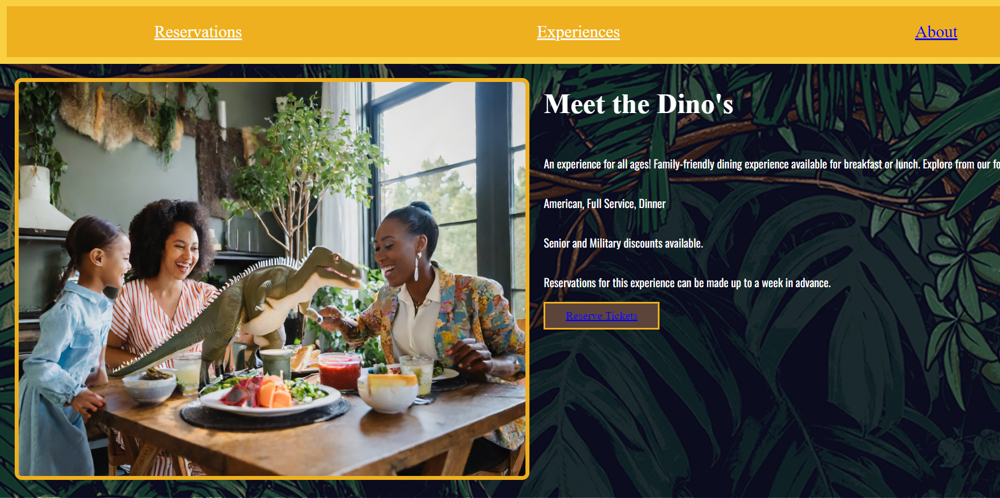

For this project, we were assigned a specific part of a fictional amusment park centered around Jurassic Park. My partner and I chose the section of doing Themed Dining. We worked on this from early October to January. We worked really hard on this website and I am really grateful to have had a good partner. :)

Jurassic Park